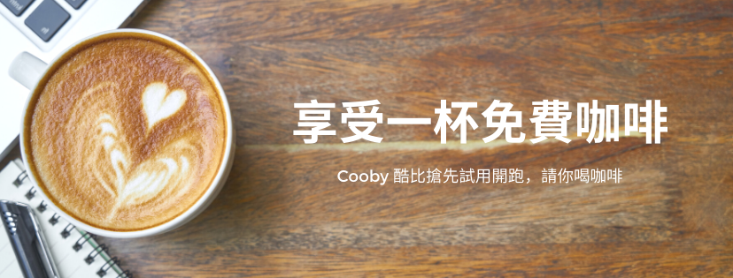

活動主題
辛苦了，讓 Cooby 請你享受杯咖啡，免費試用 Cooby。
Cooby 背景
我們厭倦了商用軟體笨重緩慢難以理解的介面，想要簡單、好用、高效率，因此為保險業務個人設計一套客戶管理工具，Cooby 就如此誕生了。Cooby 提供：
業務產品｜保險業務客戶管理工具
客戶紀錄、敏捷搜尋、檔案空間與待辦事項，所有功能全部在同一個 App 搞定，也可以自動匯入客戶資料，今後不需要再使用紙本。
業務服務｜親切專業 Line 客戶服務
我們提供的不只是科技，而是服務。有任何問題直接透過 Line 與客服聯絡。
免費咖啡活動辦法
- 僅適用於還未在 Line 上加入 Cooby 為好友的保險業務。
- 請加入 Cooby 的 Line 官方帳號為好友

- 在 Line 中提供服務公司名稱與服務年資，再回覆說：「我想要一杯咖啡」
- 我們會透過 Line，發送一組7-11中杯冰拿鐵兌換條碼給您，即可到小七享受杯咖啡。你也會加入 Cooby 試用名單。
- 我們在 Cooby 準備好時，會透過 Line 分享試用資訊給你，請持續追蹤 Cooby 的 Line 官方帳號。
- 歡迎將本活動分享給同事，好東西要跟好朋友分享。
活動注意事項
- 開放保險業務、保經代業務參加，僅限於台灣地區。
- 活動參與人必須還未加入 Cooby Line 官方帳號。
- 兌換條碼可以在全省 7-11 City Cafe 兌換。兌換條碼有截止日期，必須在失效前使用。
- 一組兌換條碼限定兌換一杯 7-11 City Cafe 中杯冰拿鐵，實際兌換可否依各家商店咖啡供應狀況有不同。
- Cooby 推出試用時間預計2020年8月初，實際時間依狀況而定。我們有權利依據狀況取消或延後試用資格。
- 有任何問題歡迎寄信到 wenhshaw@gmail.com，或者透過Cooby Line 官方帳號與我們聯絡。
coobycrm